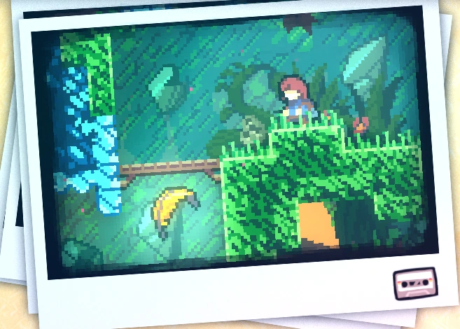

Chapter 6: Reflection
Reflection is the sixth chapter of Celeste. Considered by many as the most challenging chapter, it features significant difficulty.
Mechanics
Plot
The chapter starts with Madeline and Theo stopping by a campfire to rest. Madeline explains that Part of Her escaped from a mirror and is haunting her, and that she consists of all the things she isn't very proud of, that the mountain may have given her an actual body. She also thanks Theo for helping her through the journey. Theo tells Madeline that she reminds him of his sister, Alex, who has a similar way of challenging herself and has a lot of similar problems she's struggling with. Madeline later explains that she struggles with depression and is very anxious, and that she usually doesn't talk about it, that nobody except her mother actually knows about her mental problems. Climbing the mountain is a way to challenge herself and to accomplish something huge. After the long conversation, they decide to take themselves a selfie as a way to remember the night before they go to sleep. In a dream sequence, Madeline starts to understand that she can't run away from her problems and that she has to deal with them somehow, however her decision is to set Part of Her free. Badeline didn't want to be abandoned, becoming enraged at her and traps her for trying to leave her while she was trying her best to help the protagonist. Frightened, she starts panicking again. Trying to calm herself down with the feather technique taught by Theo, Badeline interrupts it and cuts the feather in half, throwing her down to the ground. In real life, Madeline slips off the edge and falls into a very deep chasm. Madeline's fall is broken by her landing in water after falling through multiple layers of crystals. Lost in a crystal cavern, she starts to lose hope in her being able to climb the mountain. She's angry that she was very close to the summit but Badeline caused her to fall down all the way back down. The area and the sad, melancholic music set the theme of hopelessness. The protagonist tries to find her way out of this. During her way out, she finds the Old Woman who seems to think at first that she's given up on her task. Madeline explains that she fell down and Part of Her is the reason why she's unable to reach the summit. Granny suggests that she should talk to Badeline and assumes she may be scared of climbing the mountain. The protagonist decides to go ahead with the suggestion. After chasing her for some time, Madeline finally finds Part of Herself, and tries to apologise for being selfish and attempting to leave her instead of actually helping. Badeline doesn't believe her, triggering a bossfight sequence. They eventually stop and Madeline tries to comfort her by trying to say that if they want to leave this area, they need to work together. She starts to understand that it's fine to be scared of being abandoned, and if they want to change something, they need to cooperate. This ends up with them merging into one character, giving Madeline an additional dash. They both start climbing back up, finding Granny and Theo who ran into the chasm to find her. Badeline still doesn't believe they can reach the summit, because of the long fall. At the end Madeline says that they should try once again, and that if they will cooperate, they will sooner or later reach the end again. Badeline agrees, and Madeline leaves her bag with Theo before she tries to climb the mountain again.
Dialogues
Collectibles
Crystal Heart:
Chapter 6's Crystal Heart is located at the beginning of the third sub-chapter, Hollows. At the start of the sub-chapter, the player must use the Angry Platform to break through the wall below to get to the first Feather. One must then use it to fly up-right, and then dash down to break the Smashable Wall, revealing the second Feather. The player must use that Feather to fly upwards, then climb to the third Feather, and finally use that Feather to fly to the left of the screen, revealing an entrance to a secret room. After going through the room and breaking another Smashable Wall, the player will see a puzzle with a statue, 6 colored crystals, 4 torches and 3 symbols.

Cassette Tape:
Chapter 6's cassette tape is acquired in the third sub-chapter in a secret room.

Strawberries:
• Golden Strawberry:
Obtained after completing the level while holding the golden strawberry. Can only be obtained after completing Chapter 8's B-Side.
Sub-chapters
Reflection has 6 sub-chapters:
Start

Temple

Old Trail
Cliff Face
Cliff Face
Cliff Face